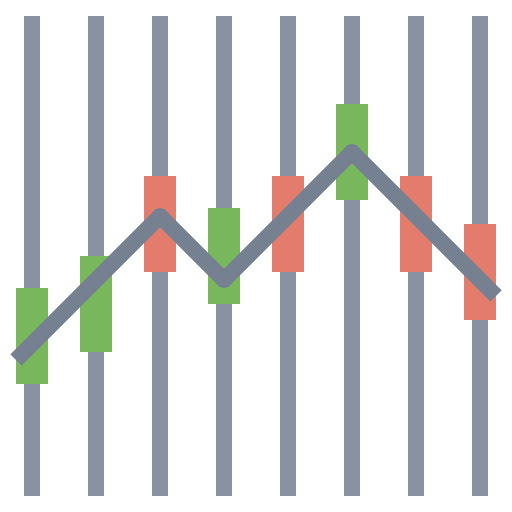

What will the current recessions recovery look like?
Historical Recession Examples
Recessions are common and are followed by a period of recovery.
The history of recessions in the United States shows that they are a natural, though painful, part of the business cycle.
There are 17 noteworthy historical recessions
The NBER defines a recession as a significant decline in economic activity spread across the economy, lasting more than a few months, normally visible in real GDP, real income, employment, industrial production, and wholesale-retail sales.
What will the recovery for the current COVID Crisis look like?
Preface
Business cycles are cyclical and continuous in nature.
While the image has clear delinitations between each phase, in reality these slowly transition over time.
Recessions are no longer defined as two consecutive quarters of declining GDP but are declared by the NBER.
The NBER defines a recession as a significant decline in economic activity spread across the economy, lasting more than a few months, normally visible in real GDP, real income, employment, industrial production, and wholesale-retail sales.
Economic recovery following a recession sees a sustained period of improving business activity.
Normally, during an economic recovery, gross domestic product (GDP) grows, incomes rise, and unemployment falls and as the economy rebounds.
Chapter I
Not all recoveries look the same
Image Source: https://www.edhec.edu/en/edhecvox/economie-finance/yield-curve-telling-us-recession-around-corner
Recession shapes are used by economists to describe different types of recessions.
There is no specific academic theory or classification system for recession shapes; rather the terminology is used as an informal shorthand to characterize recessions and their recoveries.
The most commonly used terms are V-shaped, U-shaped, W-shaped, and L-shaped recessions.
The shapes take their names from the approximate shape economic data make in graphs during recessions. The letters can also be applied referring to the recoveries (for example, a "V-shaped recovery").
Types of Recessionary Curves
Chapter II
Standard Recessionary Indicators
Gross Domestic Product (GDP) Gross Domestic Product (GDP) is the monetary value of all finished goods and services made within a country during a specific period. GDP provides an economic snapshot of a country, used to estimate the size of an economy and growth rate. GDP can be calculated in three ways, using expenditures, production, or incomes.
 S&P500 The S&P 500 or Standard & Poor's 500 Index is a market-capitalization-weighted index of the 500 largest U.S. publicly traded companies. The index is widely regarded as the best gauge of large-cap U.S. equities. Other common U.S. stock market benchmarks include the Dow Jones Industrial Average or Dow 30 and the Russell 2000 Index, which represents the small-cap index.
Unemployment Unemployment is measured in order to determine the unemployment rate. The rate is a percentage that is calculated by dividing the number of unemployed individuals by the number of individuals currently employed in the labor force.
Standard Recessionary Metrics
Try Below Interactions- Click one of below tag to see different historical recession.
- Put mouseover one of the data point you interested, relevent data points on other three graphs will be highlighted as well.
Little Quiz >_<
Do you think below is a recession of not? Why?
Chapter III
Gross Domestic Product (GDP) Gross Domestic Product (GDP) is the monetary value of all finished goods and services made within a country during a specific period. GDP provides an economic snapshot of a country, used to estimate the size of an economy and growth rate. GDP can be calculated in three ways, using expenditures, production, or incomes.
S&P500 The S&P 500 or Standard & Poor's 500 Index is a market-capitalization-weighted index of the 500 largest U.S. publicly traded companies. The index is widely regarded as the best gauge of large-cap U.S. equities. Other common U.S. stock market benchmarks include the Dow Jones Industrial Average or Dow 30 and the Russell 2000 Index, which represents the small-cap index.
Unemployment Unemployment is measured in order to determine the unemployment rate. The rate is a percentage that is calculated by dividing the number of unemployed individuals by the number of individuals currently employed in the labor force.
Alternative Measures
Why alternate measures


Summary
So, what do you think the recovery for the current recession look like?
Sources
Works Cited
Monetary Policies and the Effects
Recession Curve Information: 1 2 3 4 5
Data Sources
1. Historic recession examples: Wikipedia: List of recessions in the United States
2. Percent Change in GDP: FRED: Real Gross Domestic Product
3. OTHER
4. OTHER
Packages/technology used:
D3 Library
Tableau
About Us
Authors:
Kevin Kory, Jacob Tosh, Erin Stanton, Sonya Chen
Purpose:
Create an interactive textbook to allow users to answer the question, 'What will the current recession's recovery looklike' for themselves.
Uses:
Those with a basic economic and financial background but who are not overly familiar with recessions.
For Further Questions or Comments:
jacobtosh@berkeley.edu
Final Version:
8/5/2020